This report is to document the sensitivity of the TUV model, and the subsequent calculation of water quality guidelines for PAHs, to variation in certain PAH parameters.
Input parameters
The input parameters for the calculation of light attenuation through water for the TUV model are:
- Vertical Attenuation Coefficient at wavelength
wvl:kvat = Kd*exp(-Sk(ref_wvl-wvl)-
KdLight attenuation coefficient (set directly or calculated from DOC) -
Sk(default0.018) -
ref_wvlReference wavelength for Kd (default305)
-
-
depth_mWater depth in m -
latLatitude in decimal degrees -
lonLongitude in decimal degrees -
elev_kmSurface elevation, km above sea level -
yearYear -
monthMonth -
dayDay -
tzoneTimezone Local Time - UTC (default0; UTC) -
tstartStart time, hours local time (default0) -
tstopStop time, hours local time (default23) -
tstepsNumber of time steps (default24) -
albedoSurface albedo (default0.07) -
o3_tcOzone column, Dobson Units (DU) - Looked up in climatology (recommended default300) -
so2_tcSO2 column, DU (default0) -
no2_tcNO2 column, DU (default0) -
taucldCloud optical depth (default0) -
zbaseCloud base, km (default4) -
ztopCloud top, km (default5) -
tauaerAerosol optical depth at 550 nm - Looked up in climatology (recommended default0.235) -
ssaaerAerosol single scattering albedo (default0.990) -
alphaAerosol Angstrom exponent(default1.0) -
wvl_startStarting wavelength, nm (default279.5) -
wvl_endEnd wavelength, nm (default400.5) -
wvl_stepsNumber of wavelength intervals (default121) -
nstrTUV run type; use -2 for fast, 4 for slightly more accurate (default-2)
Those currently under consideration for sensitivity analysis are:
-
KdLight attenuation coefficient - includes use ofDOCfor calculatingKd -
latLatitude in decimal degrees -
lonLongitude in decimal degrees -
elev_kmSurface elevation, km above sea level -
albedoSurface albedo (default0.07) -
o3_tcOzone column, Dobson Units (DU) - Looked up in climatology (recommended default300) -
tauaerAerosol optical depth at 550 nm - Looked up in climatology (recommended default0.235) -
ssaaerAerosol single scattering albedo (default0.990) -
nstrTUV run type; use -2 for fast, 4 for slightly more accurate (default-2)
The analyses will be conducted at three different sample lakes (Southern Interior, Vancouver Island, Northeast), using two PAHs (Anthracene and Benzo[a]pyrene).
Initially, sensitivity analyses will be univariate (varying the input of interest while holding the others constant). If there are significant interactions expected between certain variables, these can be explored.
Basic usage of the pahwq package
To calculate the acute phototoxic water quality guideline (PLC50) for Anthracene at 0.25 m depth in Okanagan Lake on June 21, 2023, with a measured DOC of 5 g/m^3, you would use the following code:
First, set up the options for the model run:
library(pahwq)
set_tuv_aq_params(
depth_m = 0.25,
lat = 49.601632,
lon = -119.605862,
elev_km = 0.342,
DOC = 5,
date = "2023-06-21",
tzone = -8,
albedo = 0.05
)You can view the options that will be used by TUV. Some are set via the function inputs, and some are looked up:
view_tuv_aq_params()
#> 20.11 0.018 305 ! a,b,c for: kvdom = a exp(-b(wvl-c)). a = kd(305), b = Sk, c = wavelength, wvl = 305
#> 0.25 ! ydepth, m
#> 49.601632 ! lat, negative S of Equator
#> -119.605862 ! lon, negative W of Greenwich (zero) meridian
#> 0.342 ! surface elevation, km above sea level
#> -8 ! timezone: Local Time - UTC
#> 2023 ! iyear
#> 6 ! imonth
#> 21 ! iday
#> 0 ! tstart, hours local time
#> 23 ! tstop, hours local time
#> 24 ! number of time steps
#> 0.05 ! surface albedo
#> 359.937 ! o3_tc ozone column, Dobson Units (DU)
#> 0 ! so2_tc SO2 column, DU
#> 0 ! no2_tc NO2 column, DU
#> 0 ! taucld - cloud optical depth
#> 4 ! zbase - cloud base, km
#> 5 ! ztop - cloud top, km
#> 0.0641989811085006 ! tauaer - aerosol optical depth at 550 nm
#> 0.99 ! ssaaer - aerosol single scattering albedo
#> 1 ! alpha - aerosol Angstrom exponent
#> 279.5 ! starting wavelength, nm
#> 420.5 ! end wavelength, nm
#> 141 ! number of wavelength intervals
#> -2 ! nstr, use -2 for fast, 4 for slightly more accurate
#> T ! out_irrad_y, T/F, planar spectral irradiance at ydepth
#> T ! out_aflux_y, T/F, scalar spectral irradiance (actinic flux) at depth
#> T ! out_irrad_ave, T/F, planar irrad., averaged 0-ydepth
#> T ! out_aflux_ave, T/F, scalar, ave 0-ydepth
#> T ! out_irrad_atm, T/F, planar, in atmosphere
#> T ! out_aflux_atm, T/F, scalar, in atmosphereRun the TUV model and get the results. The results show the underwater irradiance at the specified depth, at each wavelength and time step.
run_tuv()
# Get the results
res <- get_tuv_results(file = "out_irrad_y")
head(res)
#> wl wavelength_start wavelength_end Kd_lambda t_00.00.00 t_01.00.00
#> 1 280 279.5 280.5 31.5 0 0
#> 2 281 280.5 281.5 31.0 0 0
#> 3 282 281.5 282.5 30.4 0 0
#> 4 283 282.5 283.5 29.9 0 0
#> 5 284 283.5 284.5 29.3 0 0
#> 6 285 284.5 285.5 28.8 0 0
#> t_02.00.00 t_03.00.00 t_04.00.00 t_05.00.00 t_06.00.00 t_07.00.00 t_08.00.00
#> 1 0 0 3.16e-38 1.00e-37 1.90e-37 4.44e-37 7.97e-34
#> 2 0 0 3.21e-35 1.02e-34 1.94e-34 4.63e-34 6.16e-31
#> 3 0 0 3.74e-32 1.18e-31 2.27e-31 5.57e-31 5.39e-28
#> 4 0 0 1.84e-30 5.80e-30 1.12e-29 2.79e-29 2.25e-26
#> 5 0 0 2.19e-28 6.92e-28 1.35e-27 3.47e-27 2.16e-24
#> 6 0 0 1.75e-26 5.52e-26 1.09e-25 2.90e-25 1.36e-22
#> t_09.00.00 t_10.00.00 t_11.00.00 t_12.00.00 t_13.00.00 t_14.00.00 t_15.00.00
#> 1 3.54e-29 2.17e-26 6.84e-25 2.05e-24 6.97e-25 2.26e-26 3.79e-29
#> 2 1.04e-26 3.65e-24 8.57e-23 2.34e-22 8.72e-23 3.79e-24 1.11e-26
#> 3 3.42e-24 6.74e-22 1.17e-20 2.90e-20 1.19e-20 6.97e-22 3.62e-24
#> 4 8.16e-23 1.16e-20 1.69e-19 3.97e-19 1.72e-19 1.20e-20 8.61e-23
#> 5 3.71e-21 3.41e-19 3.95e-18 8.62e-18 4.00e-18 3.51e-19 3.90e-21
#> 6 1.08e-19 6.33e-18 5.78e-17 1.17e-16 5.85e-17 6.49e-18 1.13e-19
#> t_16.00.00 t_17.00.00 t_18.00.00 t_19.00.00 t_20.00.00 t_21.00.00 t_22.00.00
#> 1 8.93e-34 4.49e-37 1.91e-37 1.01e-37 3.22e-38 0 0
#> 2 6.83e-31 4.68e-34 1.95e-34 1.02e-34 3.27e-35 0 0
#> 3 5.92e-28 5.63e-31 2.28e-31 1.19e-31 3.81e-32 0 0
#> 4 2.46e-26 2.83e-29 1.13e-29 5.83e-30 1.87e-30 0 0
#> 5 2.34e-24 3.51e-27 1.36e-27 6.97e-28 2.23e-28 0 0
#> 6 1.46e-22 2.94e-25 1.09e-25 5.55e-26 1.78e-26 0 0
#> t_23.00.00
#> 1 0
#> 2 0
#> 3 0
#> 4 0
#> 5 0
#> 6 0Calculate the site-specific light absorption (Pabs) for
Anthracene from the TUV results. The p_abs() function uses
a lookup table to get the molar absorption coefficient for the specified
PAH.
(Pabs <- p_abs(res, "Anthracene"))
#> [1] 448.6275Finally, calculate PLC50 in 𝝁g/L, supplying the Pabs value and NLC50 (𝝁g/L):
plc_50(Pabs, NLC50 = 450)
#> [1] 16.43507Setup
We’ll start by loading the packages we need and getting some data from B.C. EMS:
con <- connect_historic_db()
db <- attach_historic_data(con)
sites_sf <- db |>
filter(
EMS_ID %in% c("0500236", "E207466", "0400390"),
# grepl("(CHARLIE L)|(OKANAGAN)|(QUAMICHAN)", MONITORING_LOCATION),
COLLECTION_START > as.Date("2020-01-01"), PARAMETER_CODE == "1103"
) |>
collect() |>
st_as_sf(coords = c("LONGITUDE", "LATITUDE"), crs = 4326, remove = FALSE) |>
filter(!is.na(RESULT)) |>
arrange(desc(COLLECTION_START)) |>
group_by(EMS_ID, MONITORING_LOCATION, LONGITUDE, LATITUDE) |>
mutate(doc_min = min(RESULT), doc_max = max(RESULT)) |>
slice(1) |>
select(emsid = EMS_ID,
name = MONITORING_LOCATION,
lon = LONGITUDE,
lat = LATITUDE,
date = COLLECTION_START,
DOC = RESULT,
doc_min,
doc_max) |>
left_join(
tribble(
~ emsid, ~elev_m,
"E207466", 25,
"0400390", 693,
"0500236", 342
), by = join_by("emsid")
) |>
ungroup() |>
relocate(elev_m, .after = lat)
disconnect_historic_db(con)Locations
mapview(sites_sf, zcol = "name", legend = FALSE)Okanagan Lake, Okanagan
- EMS ID: 0500236
- Region: Okanagan
- Latitude: 49.8614 N
- Longitude: 119.5134 W
- Site Depth: 70.1 m
- Maximum Lake Depth: 232 m
- Lake Elevation: 342 m
- Lake Surface Area: 350.08 sq km
Charlie Lake, Peace
- EMS ID: 0400390
- Region: Peace
- Latitude: 56.3125 N
- Longitude: 120.9642 W
- Site Depth: 13 m
- Maximum Lake Depth: 13 m
- Lake Elevation: 693 m
- Lake Surface Area: 17.56 sq km
Quamichan Lake, Vancouver Island
- EMS ID: E207466
- Region: Vancouver Island
- Latitude: 48.8003 N
- Longitude: 123.6625 W
- Site Depth: 7 m
- Maximum Lake Depth: 8 m
- Lake Elevation: 25 m
- Lake Surface Area: 2.88 sq km
Prepare the data for comparisons, including setting the date to be the same
for all sites:
sites <- sites |>
mutate(date = "2023-08-01")
gt(sites)| emsid | name | lon | lat | elev_m | date | DOC | doc_min | doc_max |
|---|---|---|---|---|---|---|---|---|
| 0400390 | CHARLIE L DEEP STATION 1.2 KM EAST OF PARK | -120.9642 | 56.3125 | 693 | 2023-08-01 | 14.00 | 0.96 | 15.40 |
| 0500236 | OKANAGAN L D/S KELOWNA STP (DEEP) | -119.5134 | 49.8614 | 342 | 2023-08-01 | 4.26 | 4.06 | 5.17 |
| E207466 | QUAMICHAN LAKE; CENTRE | -123.6625 | 48.8003 | 25 | 2023-08-01 | 6.61 | 6.37 | 11.80 |
Basic analysis using defaults:
A function allowing us to do multiple sites:
multi_tuv <- function(df, site = "name", pah, varying, vals = NULL, ..., NLC50) {
if (!varying %in% union(names(tuv_aq_defaults()), names(formals(set_tuv_aq_params)))) {
stop(varying, " is not a valid argument for `set_tuv_aq_params()`")
}
if (!is.null(vals)) {
var_df <- data.frame(vals)
names(var_df) <- varying
df <- df |>
select(!any_of(varying)) |>
dplyr::cross_join(var_df)
}
df |>
rowwise() |>
mutate(
Pabs = calc_Pabs(
date = date,
lat = lat,
lon = lon,
elev_m = elev_m,
pah = pah,
varying = .data[[varying]],
vary_var = varying,
...
),
plc50 = plc_50(Pabs, pah = pah),
plc_nlc_ratio = plc50 / nlc50_lookup(pah)
)
}
calc_Pabs <- function(date, lat, lon, elev_m, pah, varying, vary_var, ...) {
args <- c(
varying,
list(
depth_m = 0.25,
date = as.Date(date),
lat = lat,
lon = lon,
elev_km = elev_m / 1000
),
...
)
names(args)[1] <- vary_var
do.call("set_tuv_aq_params", args)
run_tuv(quiet = TRUE)
res <- get_tuv_results(file = "out_irrad_y")
p_abs(res, pah)
}Calculate Ratio of PLC50:NLC50 for Anthracene using recorded DOC:
diff_doc <- multi_tuv(sites, pah = "Anthracene", varying = "DOC", NLC50 = 450)| emsid | name | lon | lat | elev_m | date | DOC | Pabs | plc50 | plc_nlc_ratio |
|---|---|---|---|---|---|---|---|---|---|
| 0400390 | CHARLIE L DEEP STATION 1.2 KM EAST OF PARK | -120.9642 | 56.3125 | 693 | 2023-08-01 | 14.00 | 4.678927 | 12.229244 | 0.20936901 |
| 0500236 | OKANAGAN L D/S KELOWNA STP (DEEP) | -119.5134 | 49.8614 | 342 | 2023-08-01 | 4.26 | 530.384085 | 1.991441 | 0.03409417 |
| E207466 | QUAMICHAN LAKE; CENTRE | -123.6625 | 48.8003 | 25 | 2023-08-01 | 6.61 | 176.645892 | 3.117599 | 0.05337440 |
Calculate Ratio of PLC50:NLC50 for Anthracene using constant DOC = 5:
same_doc <- sites |>
mutate(DOC = 5) |>
multi_tuv(pah = "Anthracene", varying = "DOC", NLC50 = 450)| emsid | name | lon | lat | elev_m | date | DOC | Pabs | plc50 | plc_nlc_ratio |
|---|---|---|---|---|---|---|---|---|---|
| 0400390 | CHARLIE L DEEP STATION 1.2 KM EAST OF PARK | -120.9642 | 56.3125 | 693 | 2023-08-01 | 5 | 349.4598 | 2.363117 | 0.04045740 |
| 0500236 | OKANAGAN L D/S KELOWNA STP (DEEP) | -119.5134 | 49.8614 | 342 | 2023-08-01 | 5 | 375.3538 | 2.295027 | 0.03929168 |
| E207466 | QUAMICHAN LAKE; CENTRE | -123.6625 | 48.8003 | 25 | 2023-08-01 | 5 | 376.1315 | 2.293084 | 0.03925842 |
Kd
Using sample Kd values from Table 3 (ARIS 2023a), from 0.08 to 275
kd_vals <- seq(0.08, 275, length.out = 20)Kd for Anthracene
kd_test_a <- multi_tuv(sites,
pah = "Anthracene",
varying = "Kd_ref",
vals = kd_vals,
Kd_wvl = 305)
ggplot(kd_test_a, aes(x = Kd_ref, y = plc50)) +
geom_point() +
facet_wrap(vars(name), ncol = 1) +
theme_bw() +
labs(
title = "PLC50 for Anthracene at 3 sites in B.C. for a range of Kd(305)",
x = "Kd(305)",
y = "PLC50 (ug/L)"
)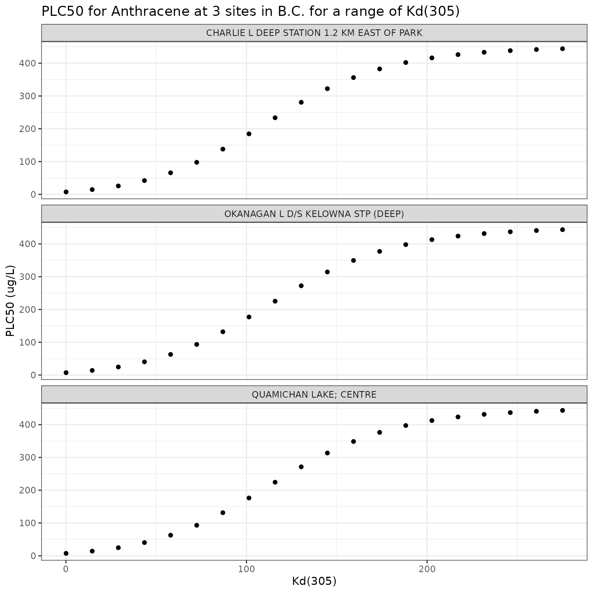
ggplot(kd_test_a, aes(x = Kd_ref, y = plc_nlc_ratio)) +
geom_point() +
facet_wrap(vars(name), ncol = 1) +
theme_bw() +
labs(
title = "Ratio of PLC50:NLC50 for Anthracene at 3 sites in B.C. for a range of Kd(305)",
x = "Kd(305)",
y = "Ratio of PLC50:NLC50"
)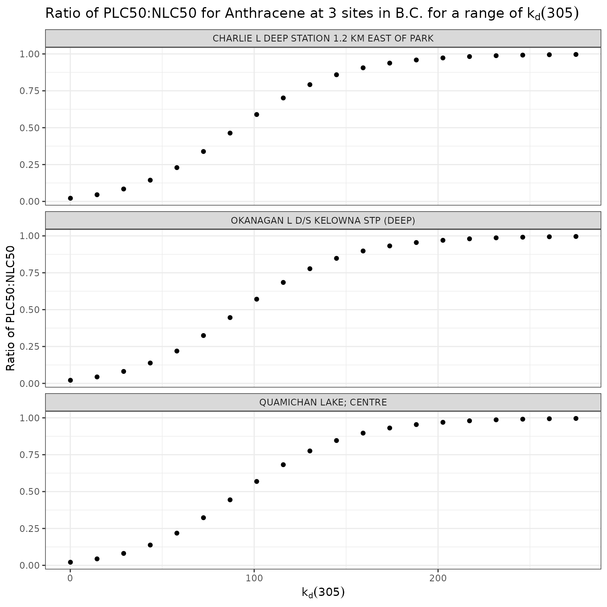
For Anthracene, the ratio of PLC50:NLC50 approaches 1 when Kd(305) is ~ 250 — in other words, PLC50 is nearly the same as NLC50, indicating that the light is attenuated to such an extent that the phototoxicity of Anthracene is not activated at the light levels when Kd(305) >= 250.
According to equation 4-1a in ARIS (2023a):
Kd(305) = a305[DOC]^b305 + 0.13; a305 = 2.76 and b305 = 1.23
so:
250 = 2.76[DOC]^1.23 + 0.13
Therefore DOC ~= 40 mg/L when Kd(305) is ~250. This is a significantly higher DOC concentration than observed in our three sample lakes, and is in fact outside the range where the above equation is recommended (it is recommended between 0.2 and 23 mg/L).
Kd for Benzo[a]pyrene
kd_test_b <- multi_tuv(sites,
pah = "Benzo[a]pyrene",
varying = "Kd_ref",
vals = kd_vals)
ggplot(kd_test_b, aes(x = Kd_ref, y = plc50)) +
geom_point() +
facet_wrap(vars(name), ncol = 1) +
theme_bw() +
labs(
title = "PLC50 for Benzo[a]pyrene at 3 sites in B.C. for a range of Kd(305)",
x = "Kd(305)",
y = "PLC50 (ug/L)"
)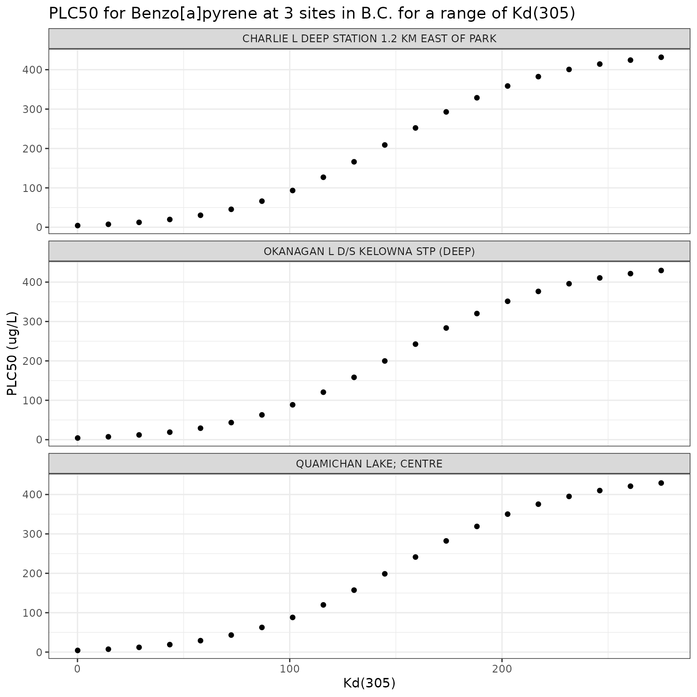
ggplot(kd_test_b, aes(x = Kd_ref, y = plc_nlc_ratio)) +
geom_point() +
facet_wrap(vars(name), ncol = 1) +
theme_bw() +
labs(
title = "Ratio of PLC50:NLC50 for Benzo[a]pyrene at 3 sites in B.C. for a range of Kd(305)",
x = "Kd(305)",
y = "Ratio of PLC50:NLC50"
)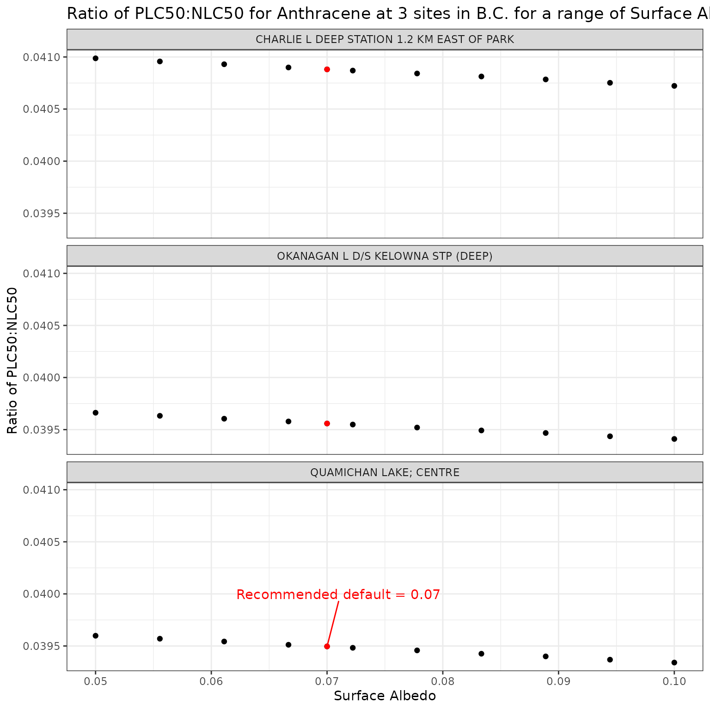
albedo
Using sample Surface values from 0.05 to 0.1 (as suggested in ARIS 2023b):
We will set DOC = 5 for all sites.
Surface Albedo for Anthracene
albedo_test_a <- multi_tuv(sites,
pah = "Anthracene",
varying = "albedo",
vals = albedo_vals,
DOC = 5)
ggplot(albedo_test_a, aes(x = albedo, y = plc50)) +
geom_point() +
facet_wrap(vars(name), ncol = 1) +
geom_point(
data = filter(albedo_test_a, albedo == 0.07),
aes(x = albedo, y = plc50),
colour = "red"
) +
geom_text_repel(
data = filter(albedo_test_a, albedo == 0.07, name == "QUAMICHAN LAKE; CENTRE"),
aes(x = albedo, y = plc50),
colour = "red",
label = "Recommended default = 0.07",
nudge_x = 0.001,
nudge_y = 0.25
) +
theme_bw() +
labs(
title = "PLC50 for Anthracene at 3 sites in B.C. for a range of Surface Albedo",
x = "Surface Albedo",
y = "PLC50 (ug/L)"
)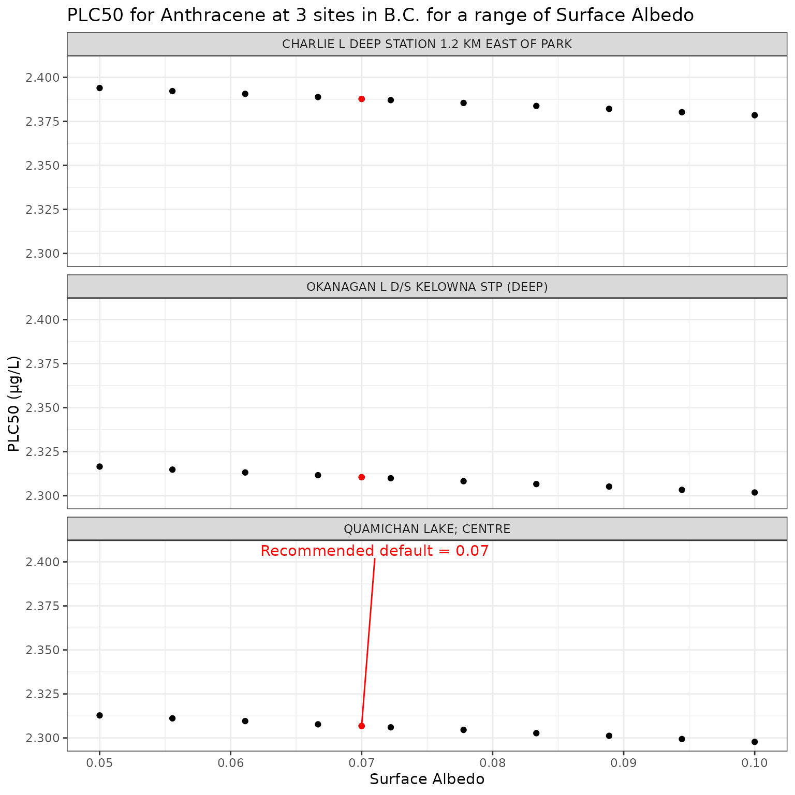
ggplot(albedo_test_a, aes(x = albedo, y = plc_nlc_ratio)) +
geom_point() +
facet_wrap(vars(name), ncol = 1) +
geom_point(
data = filter(albedo_test_a, albedo == 0.07),
aes(x = albedo, y = plc_nlc_ratio),
colour = "red"
) +
geom_text_repel(
data = filter(albedo_test_a, albedo == 0.07, name == "QUAMICHAN LAKE; CENTRE"),
aes(x = albedo, y = plc_nlc_ratio),
colour = "red",
label = "Recommended default = 0.07",
nudge_x = 0.001,
nudge_y = 0.0005
) +
theme_bw() +
labs(
title = "Ratio of PLC50:NLC50 for Anthracene at 3 sites in B.C. for a range of Surface Albedo",
x = "Surface Albedo",
y = "Ratio of PLC50:NLC50"
)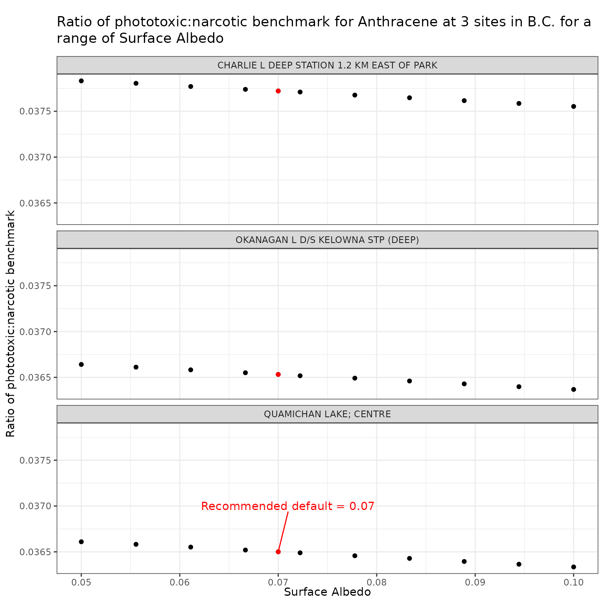
Surface Albedo for Benzo[a]pyrene
albedo_test_b <- multi_tuv(sites,
pah = "Benzo[a]pyrene",
varying = "albedo",
vals = albedo_vals,
DOC = 5)
ggplot(albedo_test_b, aes(x = albedo, y = plc50)) +
geom_point() +
facet_wrap(vars(name), ncol = 1) +
geom_point(
data = filter(albedo_test_b, albedo == 0.07),
aes(x = albedo, y = plc50),
colour = "red"
) +
geom_text_repel(
data = filter(albedo_test_b, albedo == 0.07, name == "QUAMICHAN LAKE; CENTRE"),
aes(x = albedo, y = plc50),
colour = "red",
label = "Recommended default = 0.07",
nudge_x = 0.001,
nudge_y = 0.1
) +
theme_bw() +
labs(
title = "PLC50 for Benzo[a]pyrene at 3 sites in B.C. for a range of Surface Albedo",
x = "Surface Albedo",
y = "PLC50 (ug/L)"
)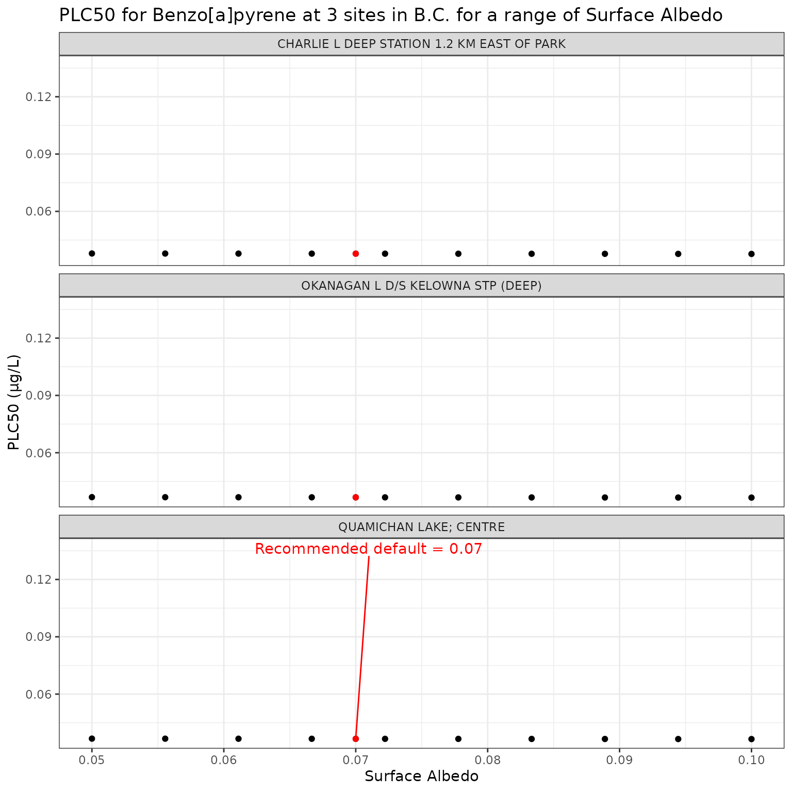
ggplot(albedo_test_b, aes(x = albedo, y = plc_nlc_ratio)) +
geom_point() +
facet_wrap(vars(name), ncol = 1) +
geom_point(
data = filter(albedo_test_b, albedo == 0.07),
aes(x = albedo, y = plc_nlc_ratio),
colour = "red"
) +
geom_text_repel(
data = filter(albedo_test_b, albedo == 0.07, name == "QUAMICHAN LAKE; CENTRE"),
aes(x = albedo, y = plc_nlc_ratio),
colour = "red",
label = "Recommended default = 0.07",
nudge_x = 0.001,
nudge_y = 0.0003
) +
theme_bw() +
labs(
title = "Ratio of PLC50:NLC50 for Benzo[a]pyrene at 3 sites in B.C. for a range of Surface Albedo",
x = "Surface Albedo",
y = "Ratio of PLC50:NLC50"
)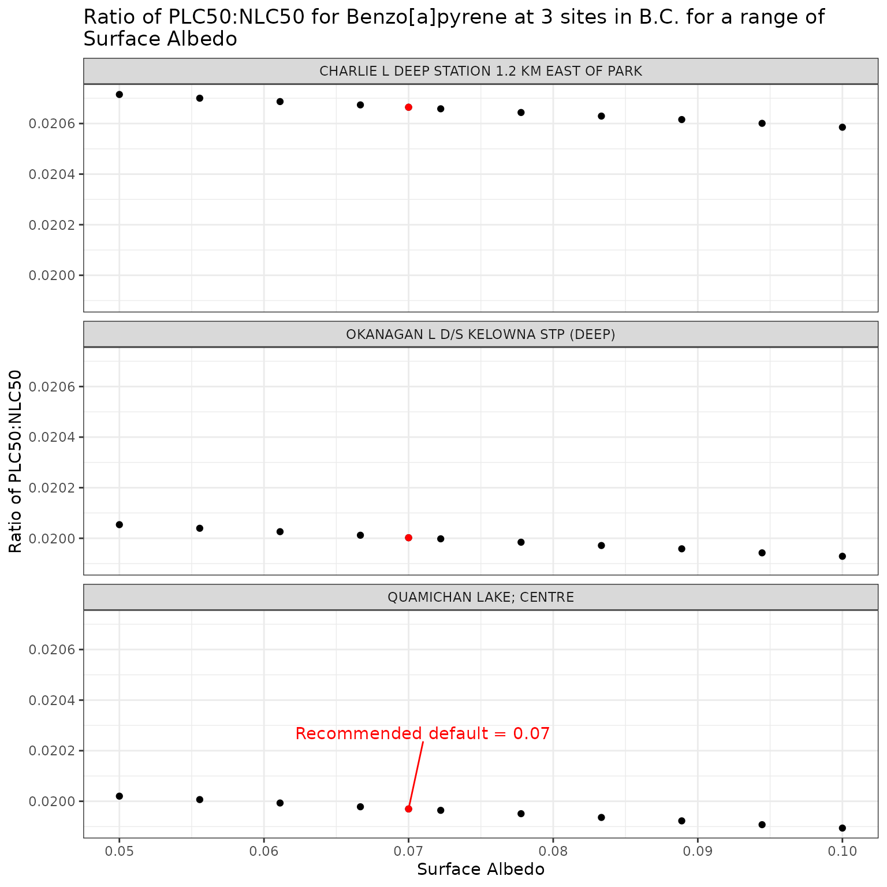
o3_tc (Ozone Column)
- Currently getting from historic climatology, could update to use modern data (similar to aerosol)
- Recommended test range 280-420 DU
ozone_vals <- seq(280, 420, by = 10)
ozone_test_a <- multi_tuv(sites,
pah = "Anthracene",
varying = "o3_tc",
vals = ozone_vals,
DOC = 5)
ggplot(ozone_test_a, aes(x = o3_tc, y = plc50)) +
geom_point() +
facet_wrap(vars(name), ncol = 1) +
geom_point(
data = filter(ozone_test_a, o3_tc == 300),
aes(x = o3_tc, y = plc50),
colour = "red"
) +
geom_text_repel(
data = filter(ozone_test_a, o3_tc == 300, name == "QUAMICHAN LAKE; CENTRE"),
aes(x = o3_tc, y = plc50),
colour = "red",
label = "Recommended default = 300"
) +
theme_bw() +
labs(
title = "PLC50 for Anthracene at 3 sites in B.C. for a range of Ozone Total Column",
x = "Ozone Total Column",
y = "PLC50 (ug/L)"
)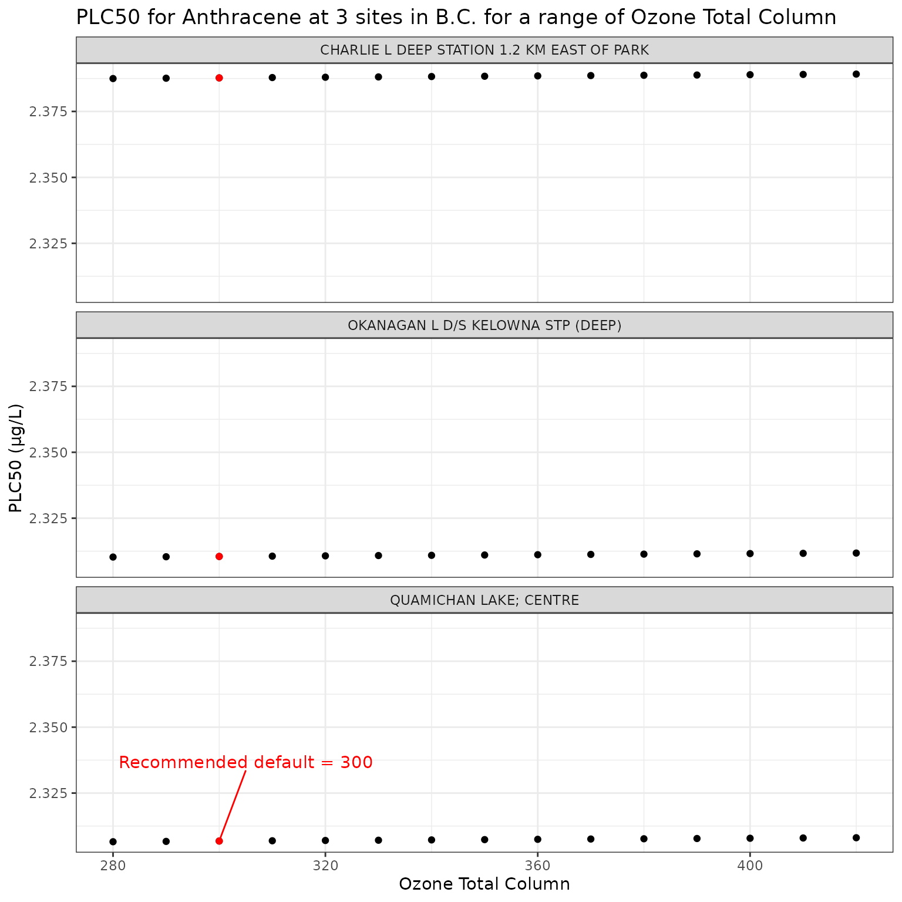
ggplot(ozone_test_a, aes(x = o3_tc, y = plc_nlc_ratio)) +
geom_point() +
facet_wrap(vars(name), ncol = 1) +
geom_point(
data = filter(ozone_test_a, o3_tc == 300),
aes(x = o3_tc, y = plc_nlc_ratio),
colour = "red"
) +
geom_text_repel(
data = filter(ozone_test_a, o3_tc == 300, name == "QUAMICHAN LAKE; CENTRE"),
aes(x = o3_tc, y = plc_nlc_ratio),
colour = "red",
label = "Recommended default = 300"
) +
theme_bw() +
labs(
title = "Ratio of PLC50:NLC50 for Anthracene at 3 sites in B.C. for a range of Ozone Total Column",
x = "Ozone Total Column",
y = "Ratio of PLC50:NLC50"
)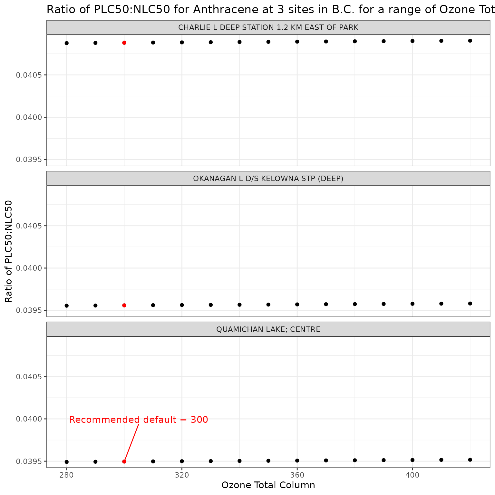
Ozone Total Column for Benzo[a]pyrene
ozone_test_b <- multi_tuv(sites,
pah = "Benzo[a]pyrene",
varying = "o3_tc",
vals = ozone_vals,
DOC = 5)
ggplot(ozone_test_b, aes(x = o3_tc, y = plc50)) +
geom_point() +
facet_wrap(vars(name), ncol = 1) +
geom_point(
data = filter(ozone_test_b, o3_tc == 300),
aes(x = o3_tc, y = plc50),
colour = "red"
) +
geom_text_repel(
data = filter(ozone_test_b, o3_tc == 300, name == "QUAMICHAN LAKE; CENTRE"),
aes(x = o3_tc, y = plc50),
colour = "red",
label = "Recommended default = 300"
) +
theme_bw() +
labs(
title = "PLC50 for Benzo[a]pyrene at 3 sites in B.C. for a range of Ozone Total Column",
x = "Ozone Total Column",
y = "PLC50 (ug/L)"
)
ggplot(ozone_test_b, aes(x = o3_tc, y = plc_nlc_ratio)) +
geom_point() +
facet_wrap(vars(name), ncol = 1) +
geom_point(
data = filter(ozone_test_b, o3_tc == 300),
aes(x = o3_tc, y = plc_nlc_ratio),
colour = "red"
) +
geom_text_repel(
data = filter(ozone_test_b, o3_tc == 300, name == "QUAMICHAN LAKE; CENTRE"),
aes(x = o3_tc, y = plc_nlc_ratio),
colour = "red",
label = "Recommended default = 300"
) +
theme_bw() +
labs(
title = "Ratio of PLC50:NLC50 for Benzo[a]pyrene at 3 sites in B.C. for a range of Ozone Total Column",
x = "Ozone Total Column",
y = "Ratio of PLC50:NLC50"
)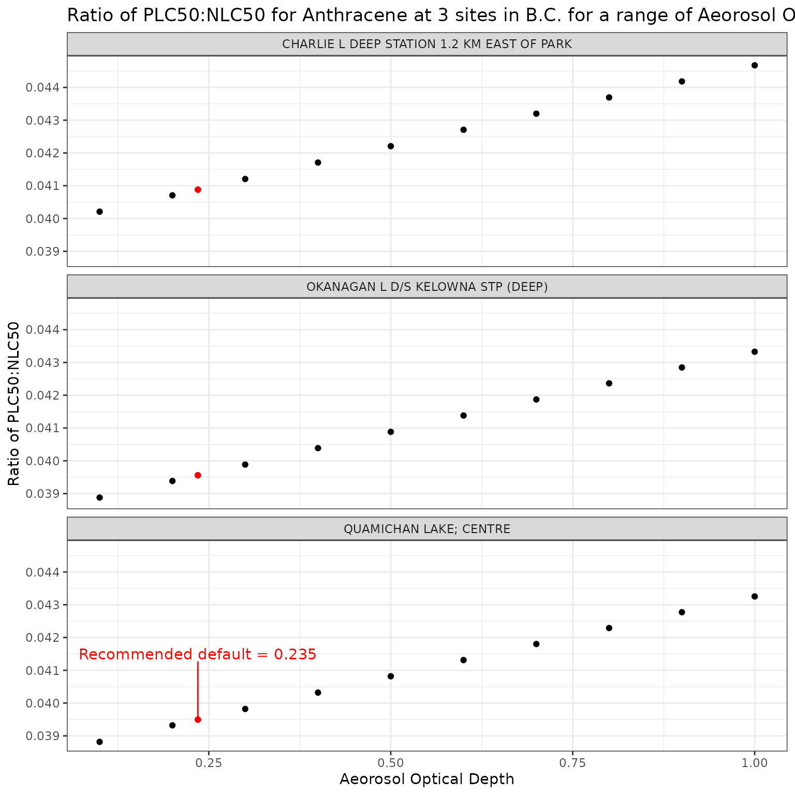
tauaer (Aerosol Optical Depth)
- Getting from MODIS satellite data (monthly averages from 2002 - 2023, 1 degree resolution)
- Recommended test range 0.1-1.0